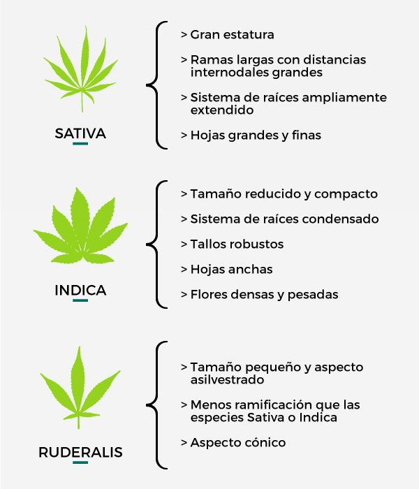

Los productos con cannabis siguen siendo algo de lo
que se teme hablar, es importante recalcar que no todo lo relacionado con MARIHUANA es malo existen
productos que se usan de manera medicinal o hasta de manera cultural, claro que existen productos
recreeativos, pero cada persona es responsable de lo que consume. Al tratarse de un tema "sencible"
para algunas personas, es un mercado muy regulado (hablando del uso recreeativo) en el que no cualquiera
puede entrar tanto como vendedor como consumidor. Es muy importante saber que tipo de marihuna se
consume, ya que existen diferente tipos dependiendo de los efectos esperados es la que se recomienda.

Para conocer un poco más del tema te invitamos a visitareste articulo.
|